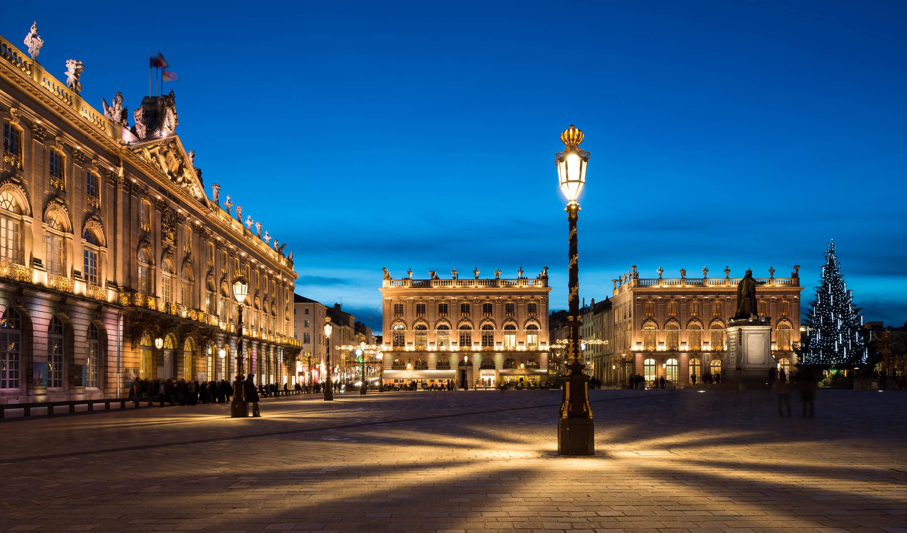

Les incontournables
Ne manquez pas ces lieux emblématiques

UNESCO
Place Stanislas
Chef-d'œuvre de l'architecture classique du XVIIIe siècle, cette place royale est le symbole de Nancy.
En savoir plus
Art Nouveau
Musée de l'École de Nancy
Collection unique d'œuvres Art Nouveau dans une villa exceptionnelle entourée d'un magnifique jardin.
En savoir plus
Gastronomie
Spécialités Lorraines
Dégustez les macarons de Nancy, la quiche lorraine et la mirabelle, fierté de la région.
En savoir plus